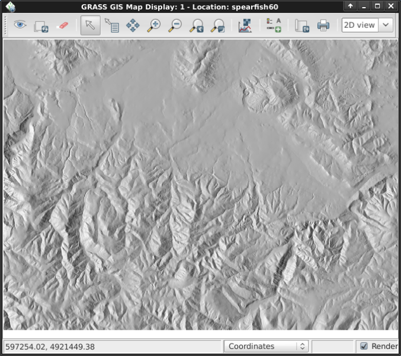

GRASS GIS Quickstart¶
GRASS GIS ist ein leistungsfähiges GIS, mit dem Sie Geodaten visualisieren, verwalten, analysieren und bearbeiten können.
Inhalt
GRASS starten¶
Klicken Sie auf den GRASS-Link unter .
From the „Welcome to GRASS GIS“ window, select the „nc_basic_spm_grass7“ dataset for the location, and „user1“ for the mapset
Klicken Sie auf Start GRASS session.

This will launch GRASS into the graphical user interface (written in wxPython).
Tipp
Wenn Sie auf einem Netbook mit kleinem Display (800x600 Auflösung) arbeiten, kann der Startbildschirm zu groß und der [Start GRASS] Knopf eventuell versteckt sein. In diesem Fall sollten Sie das Fenster an einer Ecke etwas größer ziehen. Oder Sie können das gesamte Fenster weiter nach oben schieben, in dem Sie die Alt-Taste gedrückt halten und dann das Fenster mit der linken Maustaste verschieben.
Anzeigen einer Karte¶

Once inside, select for display the raster map layer „elevation“ from the PERMANENT mapset.
Gehen Sie in das Fenster „GIS-Layer-Manager“.
Klicken Sie auf die Schaltfläche der Schachbrett-Symbolleiste mit einem „+“.
Wählen Sie den gewünschten Kartennamen aus der Pulldown-Liste „map to be displayed“ aus, und klicken Sie auf :guilabel:‘Ok‘.
Klicken Sie auf die Schaltfläche mit einem „+“ und einer gebogenen Polylinie, die ein bisschen wie ein „V“ aussieht.
Wählen Sie den Vektor-Layer „‚roadsmajor‘“ aus dem PERMANENT Mapset aus, und klicken Sie auf :guilabel:‘Ok‘.
Es kann sein, dass Sie auf den Rasterlayer klicken müssen und über „Zoom to selected map(s)“ in den Bereich der Daten navigieren.
Sie sollten nun die beiden Karten im Kartenfenster sehen.
Ein Höhenprofil erstellen¶

Zurück im Fenster „GIS Layer Manager“ klicken Sie auf den Namen der Rasterkarte „Elevation“, um ihn auszuwählen. Dann befindet sich im Fenster „Kartenanzeige“ rechts neben den Zoomschaltflächen in der Symbolleiste „Kartenanzeige“ ein Symbol mit einem Liniendiagramm und einer Kontrolltafel. Klicken Sie darauf und wählen Sie Profilflächenkarte. Das Mapset @PERMANENT wird automatisch durchsucht. Wenn die Karte nicht automatisch aufgelistet wird, wählen Sie erneut die Elevationskarte als Rasterebene und drücken Sie Ok. Wählen Sie im Fenster „GRASS Profile Analysis Tool“ die zweite Schaltfläche von links, mit der Sie die Profillinie festlegen, darauf klicken und dann einige Punkte auf der Leinwand „Map Display“ markieren können. Wenn Sie fertig sind, gehen Sie zurück zum Profilfenster. Klicken Sie auf die I/O-Taste ganz rechts, um das Profilfenster zu schließen.
Farben von Rasterkarten anpassen¶
Nun sehen Sie Ihre neue Rasterkarte zusammen mit der Höhenrasterkarte in der Ebenenliste hinzugefügt, außer dass sie diesmal in Ihrer „user1“-Arbeitskarte enthalten ist. Sie können das Kontrollkästchen der Sichtbarkeit der Ebene „Erhöhung“ jetzt deaktivieren, damit die beiden Rasterebenen nicht übereinander gezogen werden. Klicken Sie auf das Kontrollkästchen, um Ihre neue Karte anzuzeigen, wenn sie nicht automatisch gerendert wird. Die Farben sind vielleicht nicht so, wie Sie es möchten, also werden wir sie ändern. Wenn das fraktale DEM in der Ebenenliste ausgewählt ist, klicken Sie mit der rechten Maustaste auf den Namen dieser Rasterkartenebene und wählen Sie „Farbtabelle setzen“. Alternativ können Sie Farbtabellen im Menü Raster unter verwalten. Klicken Sie auf der Registerkarte „Definieren“ auf die Pulldown-Liste für die Option „Name der Farbtabelle“ und wählen Sie eine aus der Liste. „Terrain“ oder „srtm“ sind eine gute Wahl. Klicken Sie anschließend auf die Schaltfläche [Ausführen] und schließen Sie das Dialogfenster r.colors. Die Farben sollten dann automatisch aktualisiert werden.
Erstellen einer Reliefschattierung (Schummerung)¶
{kind=link}
Next we’ll create a shaded relief map of the elevation layer we saw earlier. Start by verifying that the computational region is set match the raster map of interest, „elevation“ in the PERMANENT mapset. To do this, make sure it is loaded into the layer list of the main GIS Layer Manager window, right click on its name and select „Set computation region from selected map(s)“. If necessary, click on the „Layers“ tab at the bottom to get back to the layer list.
Wählen Sie im Menü Raster die Option (Terrain analysis ist etwa auf halbem Weg zum Raster Menü), und der Dialog zur Modulsteuerung erscheint. Wählen Sie als Eingangsname die Karte „elevation“ @PERMANENT und als Ausgangskarte können Sie „shaded_relief“ angeben. Klicken Sie anschließend auf [Ausführen]. Nun sollten Sie die neue shaded_relief @user1 Map in Ihrer Layerliste finden. Deaktivieren Sie die anderen Rasterebenen, um nur die neu erstellte schattierte Relief-Rasterebene anzuzeigen.
Wassereinzugsgebiete und Flüsse¶
Wieder selektieren wir die Karte elevation @PERMANENT. Wenn Sie den Ausschnitt verändert haben sollten, klicken Sie mit der rechten Maustaste auf den Layernamen wählen Sie aus dem Kontextmenü um die volle Ausdehnung für die Berechnung der Wassereinzugsgebiete zu erhalten.
Bemerkung
Die wxGUI Karte Anzeige und Zoom ist unabhängig und hat keinen Effekt auf die Berechnung. Prüfen Sie die Berechnungsregion über ; dies ist äußerst wichtig für jede Raster Grid Operation. Raster Karten mit verschiedenen Begrenzungen und Auflösungen werden on-the-fly auf die Berechnungsregion angepasst.
Wählen Sie nun im Menü Raster . Der r.watershed Dialog öffnet sich. Wählen Sie die elevation Karte als Eingabe, im Reiter ‚Eingabe Optionen‘ setzen sie threshold Wert auf 10000 Zellen, dann im Reiter ‚Ausgabe Optionen‘ geben Sie „elev.basins“ als basin Option und „streams“ für die „Name for output stream segments raster map“-Option direkt darunter an. Dann klicken Sie auf [Los].
Zurück im Ebenen-Manager fügen Sie die zwei neuen Karten wieder in die Layerliste ein. Stellen sicher, dass nur diese für die Anzeige ausgewählt sind. Klicken Sie mit der rechten Maustaste auf „elev.basins“ und wählen Sie „Deckkraft ändern“. Setzen Sie den Wert auf 50% und rendern Sie die Karte nochmal.

In the GIS Layer Manager window click on the Add various overlays button and Add grid layer. For size of grid put 5000 (in map units, here meter). Once done press OK. Optionally you may change the colors for the grid lines and the text labels.
Um eine Maßstabsleiste anzuzeigen, klicken Sie im Map Display Fenster auf das Icon „Kartenelemente hinzufügen“ und klicken auf Nordpfeil und Maßstab hinzufügen. Lesen Sie die Instruktionen und klicken dann auf [Ok]. Eine Maßstabsleiste erscheint oben links, ziehen Sie sie in die linke untere Ecke. Aus demselben Menü wählen Sie nun „Legende hinzufügen“, wählen die Rasterkarte aus, für die eine Legende erstellt werden soll. Danach klicken Sie [Ok] und dann nochmal [Ok]. Ziehen Sie nun die Legende auf die rechte Seite des Map Displays.
Now you may be thinking to yourself that these fonts are a bit bare. That’s easily fixed in the GIS Layer Manager menus open and in the Map Display tab click the [Set font] button, choose one (for example DajVu Sans Bold), and then [Save] or [Save for this session only] in the Preferences window. You will have to do a full re-render to see the change so click on the re-render button the first in the Map Display window. The fonts will now be much prettier.
Arbeit mit Vektormodulen¶
Die Aufgaben haben nur einige Rasteranalysen vorgestellt. GRASS GIS bietet aber auch eine Vielzahl von Vektor Modulen, die genauso umfangreich sind wie für die Rasteranalyse. GRASS bietet eine topologische Vektorumgebung.

Continuing with the watershed basins created above, next we’ll convert
them into vector polygons. In the Raster menu select .
In the r.to.vect dialog that opens make sure that elev.basins @user1 is
selected for the input map, give a name for the output map like basins_areas
(vector map names must be SQL compliant, hence not all characters are allowed),
and change „Output feature type“ to area. In the Attributes tab tick
the box to use raster values as category numbers (i.e., the IDs),
since these will match the values in our stream segment raster map created
earlier. Then click on [Run]. Once the new vector map is displayed, you
might right click on it in the Layer Manager list and change its opacity
level to 50%.
Anpassen der Vektorkartenfarben¶
As we did earlier with a raster map we will change the color table of the
new watershed basins vector map. With the basins_areas selected in the
layer list, right click on the this vector map layer name and choose
„Set color table“. In the ‚Define‘ tab click on the pull-down list for the
„Name of color table“ option, and pick for example „bcyr“ (blue-cyan-yellow-red)
from the list. Once done click the [Run] button and close the v.colors
dialog window. You may need to re-draw the map to see the colorized vector
map.

Verwalten von Attributen¶
Next we’ll add some attributes to those new areas, containing the average
elevation in each basin. In the Vector menu select .
Use basin_areas as the vector polygon map, and select the elevation
raster map to calculate the statistics from; set the the „Column prefix for
new attribute columns“ to elev, and click [Run]; then close the dialog when
it is finished. You can query the values in the Map Display window using
the fourth icon from the left and after verifying that the vector-areas map
is selected in the Layer List, clicking on a vector area in the map canvas.
You can now re-colorize the areas based on the average elevation values using the
v.colors module. In the Vector menu select .
Select basin_areas for the input vector map, as „Source value“ select
attr instead of cat. Then, in the „Define“ tab choose the elev_average
attribute column for the column containing the numeric range. The colors we
want to copy from the elevation raster map, so we select it as the name for
„Raster map from which to copy color table“. After clicking [Run] you
need to refresh the map display (first icon from left) to see the updated
basins map.
Now let’s look at the attribute table and SQL builder in more detail. In the
Layer Manager click the table icon („Show attribute data for selected vector
map“), it is second from the left on the bottom row. This will open a view
of the database table attached to the selected vector map. For now we’ll just
do a Simple database query to find watershed basins without a lot of variation
in them. Where it says SELECT * FROM basin_areas WHERE pick elev_stddev
from the pull down list for the standard deviation statistic, then select <
from the relation list and in the text box to its right enter < 50 and
click [Apply]. You’ll notice the
number of loaded records in the information bar along the bottom of the window
has shrunk, and that all of the rows with large values for standard deviation
(std. dev.) are now gone from the displayed table. Right-click on the table data
and choose Select all. Again right-click on the table data and this time
choose Highlight selected features. You should see e.g. alluvial flood basins
and mesas show up in the Map Display.
Anzeigen einer 3D-Visualisierung¶

In order to start the 3D visualization suite, select the elevation map as the raster elevation in the Layer list and additionally highlight the entry, then select in the Map Display window the „3D view“ (at the right end of the toolbar). Once the 3D display interface loads, you will see several tabs for the display control of the 3D view. Next select the „Data“ tab and set the fine resolution to „1“ (the lower the value, the finer the resolution), then move the positioning puck and height slider on the „View“ tab around to get different views.
Um Satelliten- oder Luftbilder über das Höhenmodell zu legen, klicken Sie auf den Knopf Oberflächenattribute und wählen dort color aus. Klicken Sie in dem neuen Dialog auf „Neue Karte“ und wählen dann eine Karte aus, die für die Farbdarstellung verwendet werden soll. Im Spearfish Datensatz ist „spot.image“ und im North Carolina Datensatz „lsat7_2002_50“ eine gute Wahl. Klicken Sie nun auf „Annehmen“ und zurück im Hauptfenster auf den Knopf „Zeichne“ in der oberen linken Ecke.
For easy navigation in the 3D view, switch on the „Rotate 3D scene“ in the map display toolbar, then use the mouse to move the view around.
Was Sie noch ausprobieren können¶
While not covered here, you may like to experiment with the Cartographic Composer and object-oriented Graphical Modelling Tool (offers export to Python). You’ll find icons to launch them on the lower row of icons in the Layer Manager window. Further details can be found in the wxGUI help pages.
API¶
The wxGUI is written in Python, and if you’re a fan of Python programming
there are a number of great tools and an API available to you. In the bottom
of the Layer Manager window click on the Python shell tab and
type help(grass.core) to see a listing of the many functions available
in the core GIS python library. Besides the core GIS functions there is
also array (NumPy), db (database), raster, and vector libraries
available. For advanced use Pythons Ctypes is supported allowing the
Python programmer direct access to GRASS GIS‘ extensive C libraries.
See the manual pages for an extensive description of the programming options.
Command line¶
In the GRASS terminal session, try a GRASS module by typing „v.clean --help“ which will give you a list of module options.
The GRASS command line is where the true power of
the GIS comes into its own. GRASS is designed to allow all commands
to be tied together in scripts for large bulk processing jobs. Popular
scripting languages are Bourne Shell and Python, and many neat tricks
to help make scripting easier are included for both. With these tools
you can make a new GRASS module with only about 5 minutes of coding,
complete with powerful parser, GUI, and help page template.
„g.manual -i“ startet einen Webbrowser mit den Modul Hilfeseiten. Am Ende schliessen Sie den Browser und tippen „exit“ in das GRASS Terminal, um die GRASS GIS Umgebung zu verlassen.
Was kommt als Nächstes?¶
Besuchen Sie die GRASS GIS Webseite unter https://grass.osgeo.org
Besuchen Sie die GRASS GIS Wiki Hilfe unter https://grasswiki.osgeo.org/wiki/
Weitere Tutorials und Übersichten finden Sie hier.
If the 400 GIS modules which come with GRASS aren’t enough for you have a look at the many contributed add-ons at https://grass.osgeo.org/grass-stable/manuals/addons/